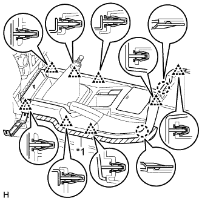
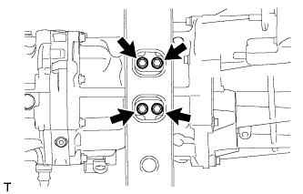

МЕХАНИЧЕСКАЯ ТРАНСМИССИЯ В СБОРЕ > СНЯТИЕ |
| 1. DISCONNECT CABLE FROM NEGATIVE BATTERY TERMINAL |
| 2. REMOVE SHIFT LEVER KNOB SUB-ASSEMBLY |
| 3. REMOVE CONSOLE PANEL SUB-ASSEMBLY |
|  |
Наклейте защитную клейкую ленту вокруг облицовки панели пола.
| *1 | Защитная клейкая лента |
С помощью съемника молдингов расцепите 8 фиксаторов и 2 захвата.
Отсоедините все разъемы и снимите облицовку панели пола.
| 4. REMOVE NO. 1 SHIFT AND SELECT LEVER BOOT |
Remove the 4 screws, 2 clips and boot.
| *1 | Clip |
| *2 | Screw |
| 5. REMOVE FLOOR SHIFT SHIFT LEVER ASSEMBLY |
Cover the shift lever cap with a cloth.
| *1 | Cloth |
| *a | Down |
| *b | Counterclockwise |
Press down on the shift lever cap and rotate it counterclockwise to remove it.
Pull out the shift lever to remove it.
| 6. REMOVE TRANSFER CASE LOWER PROTECTOR |
Remove the 4 bolts and transfer case lower protector.
| 7. DRAIN MANUAL TRANSMISSION OIL |
 |
Remove the drain plug and gasket and then drain the manual transmission oil.
 |
Remove the filler plug and gasket.
Install a new gasket and the drain plug.
| 8. REMOVE FRONT PROPELLER SHAFT ASSEMBLY |
Remove the front propeller shaft (See page Нажмите здесь).
| 9. REMOVE PROPELLER SHAFT ASSEMBLY |
Remove the propeller shaft (See page Нажмите здесь).
| 10. REMOVE FRONT EXHAUST PIPE ASSEMBLY |
Remove the front exhaust pipe (See page Нажмите здесь).
| 11. DISCONNECT WIRE HARNESS |
Disconnect the 2 connectors and detach the 4 clamps.
| 12. REMOVE TRANSFER AND MANUAL TRANSMISSION BREATHER HOSE SUB-ASSEMBLY |
Detach the clamp and disconnect the 3 breather hoses from the shift lever retainer and transfer adapter.
Remove the breather hose.
| 13. DISCONNECT CLUTCH RELEASE CYLINDER ASSEMBLY |
 |
Remove the 2 bolts and disconnect the release cylinder.
| 14. REMOVE STARTER ASSEMBLY |
Remove the starter (See page Нажмите здесь).
| 15. REMOVE FRONT SUSPENSION MEMBER BRACKET LH |
Remove the 4 bolts and member bracket.
| 16. REMOVE FRONT SUSPENSION MEMBER BRACKET RH |
Remove the 4 bolts and member bracket.
| 17. REMOVE NO. 3 FRAME CROSSMEMBER SUB-ASSEMBLY |
Support the rear side of the transmission with a support stand.
|  |
Remove the 4 bolts of the rear No. 1 engine mounting insulator.
Remove the 4 bolts, 4 nuts and frame crossmember.
| 18. REMOVE REAR NO. 1 ENGINE MOUNTING INSULATOR |
Remove the 4 bolts and engine mounting insulator.
| 19. REMOVE STIFFENER PLATE LH |
Remove the 4 bolts and stiffener plate.
| 20. REMOVE STIFFENER PLATE RH |
Remove the 4 bolts and stiffener plate.
| 21. REMOVE MANUAL TRANSMISSION UNIT ASSEMBLY |
Using a transmission jack, support the transmission.
Remove the support stand from the transmission.
 |
Remove the 4 bolts and transmission.
| 22. REMOVE TRANSFER ASSEMBLY |
 |
Для моделей с 1KD-FTV:
| *A | Для моделей с 1KD-FTV, RA61F |
| *B | Для моделей с 1KD-FTV, A750F |
 |
Кроме моделей с 1KD-FTV:
Выверните 8 болтов и снимите кронштейн.
Отсоедините раздаточную коробку от трансмиссии.